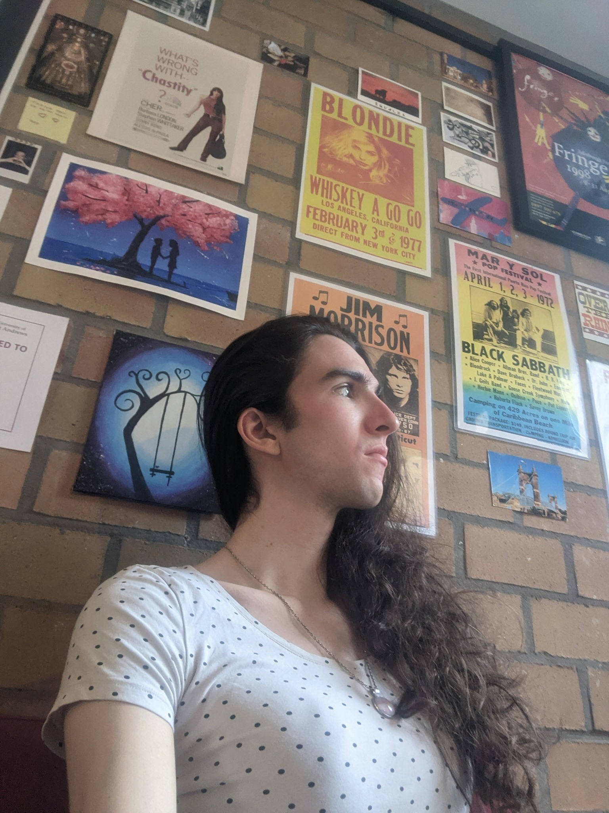

about me
Hello, world! My name is Adrienne, and my pronouns are they/them. I'm a software developer and computing tutor. I'm from Brooklyn, but I went to university in St. Andrews, Scotland, where I studied Computer Science and Psychology. I'm passionate about computing education, and thrilled to be working as an Advisor with Girls Who Code's Self-Paced Program this summer! I made this website as an example for my students, and as a friendly reminder that the global nuclear threat is still very much a thing, and probably worse than we realize.